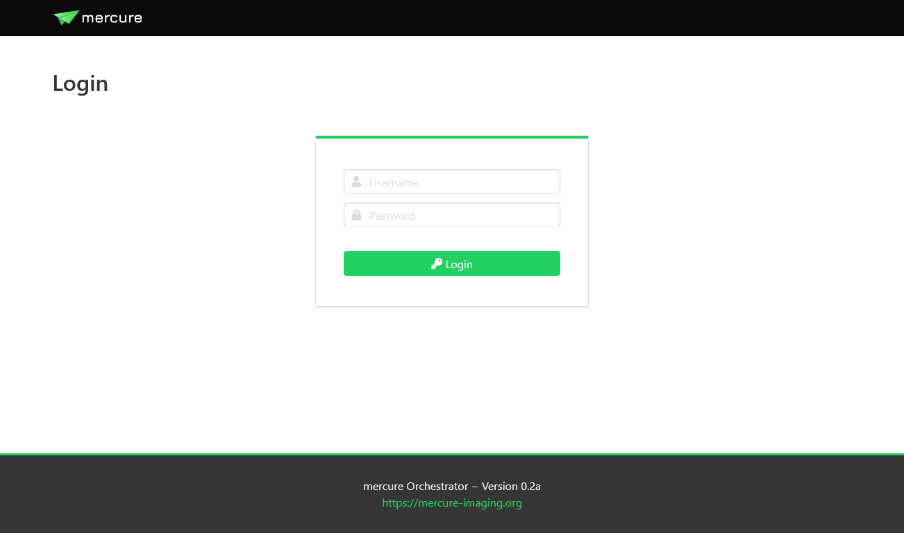
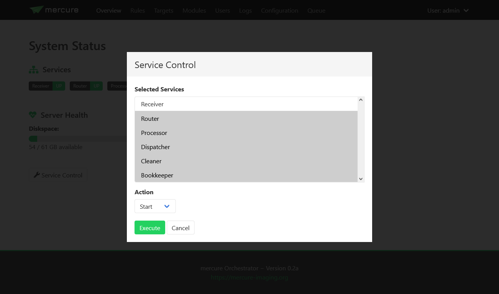

Usage
Important
The information on this page is still being updated for mercure version 0.2.
Web interface
{kind=link}
mercure can be conveniently configured and controlled using the web-based user interface. To access it, use a modern web browser (e.g., Chrome or Firefox) and enter the IP of your mercure server as URL. Depending on the port that you have selected during the installation (by default 8000), you need to add “:8000” to the URL.
During the installation, mercure creates a “seed account” that you need to use for the first login. You will be asked to change the password after the first login.
Note
The login credentials for the first login are: Username = admin, Password = router
To end your session, use the menu on the top-right and select “Logout”.
User management
{kind=link}
Users can be created, modified, and deleted on the “Users” page. There are two types of users: Normal users, who can view the configuration and status but not change any settings, and administrators, who have full access. Users with administration rights are indicated by an icon with a shield in the user list. Users can also be added to permission groups. Permission groups are not yet used for anything, but they will be used in future mercure versions to offer granular access control.
Tip
You should create separate accounts for every person using mercure. This will allow you to review which user made changes to the server configuration, as mercure is keeping track of all configuration changes.
System status and control

The status of the mercure server and its service components can be monitored on the “Overview” page. If a service is running, it will be shown in green color, otherwise it is shown in red. In normal operation, everything should be green.
{kind=link}
You can start, stop, and restart services by clicking the “Service Control” button. This will show a dialog where you can select which service(s) to control and which operation to execute (e.g., start or stop). If a service does not react anymore at all, it is also possible to kill a service.
Note
The “Service Control” button is only available for systemd- and Docker-type installations but not for Nomad-type installations. Nomad directly takes care restarting failed services.
Note
If you stop a service, it might take a short moment until the service goes down. This is because the services have been designed to finish the active series before terminating.
Tip
If you don’t want to use the web interface, you can also manually control the mercure services from the command line. This can be done with the command “systemctl start -u mercure_router.service” (in this example for the routing service). You can find the names of the individual services in the file /opt/mercure/config/services.json.
The Overview page also shows you the disk space available in the folder for buffering the incoming DICOM files. If this bar turns yellow or red, make sure to free up disk space as the mercure server will not be able to receive images if the disk is completely full.
Configuring targets

Target nodes that should receive processed and routed series can be defined and configured on the “Targets” page (via DICOM or SFTP connection). The first page shows an overview of the currently configured targets. By clicking on an individual item, you can see the target details (e.g., IP address and port). You can also test if the target can be reached by clicking the “Test” button, which will try to ping the server and open a connections (via C-Echo or SFTP).
Click the “Add New” button to create a new target. This can be done during normal operation of the server, i.e. it is not necessary to stop any of the services for adding new targets.

After choosing a unique name for the target, you can edit the target settings. First, you need to select the type of target. Currently, DICOM targets and SFTP targets are supported (other target types, such as DICOMweb will be added at later time).
For DICOM targets, enter the settings of the DICOM node, including the IP address, port, the target AET (application entity title) that should be called on the receiver side, and the source AET with which mercure identifies itself to the target.
Tip
Some DICOM nodes require that you set a specific target AET, while other systems ignore this setting. Likewise, some DICOM nodes only accept images from a sender who’s source AET is known, while others ignore the value. Please check with the vendor/operator of your DICOM node which values are required.
For SFTP targets, enter the hostname or IP, target folder on the server, username, and password.
Tip
It is recommended to create a dedicated restricted user account for the SFTP uploads. Never use the credentials of an account with access to sensitive information, as the SFTP credentials are stored in the configuration file.
Important
Support for SFTP transfers is still experimental and should be used with care.
On the “Information” tab, you can add information for documentation purpose, including a contact e-mail address (so that it can be looked up at later time who should be contacted if problems with the target exist) and description of the target.
Installing modules
An overview of the installed processing modules can be seen by clicking on the “Modules” page. Details are shown by clicking on an item, which also allows editing the module settings.
To setup a new module, click the “Install Module” button. Select a unique name for the module. It is possible to install the same processing module multiple times under different names with different settings. Specify the processing module by entering the Docker Tag.
Note
The Docker Tag corresponds to the name of the processing module as stored on Docker Hub. For modules that are not distributed via Docker Hub, the Docker container needs to be built locally on the server before it can be used by mercure.
Afterwards, you can edit additional Docker-specific settings on the “Docker” tab (additional volumes, environment variables, etc.). In most cases, these settings are not needed. Settings for the processing module can be defined on the “Settings” tab. These settings must be entered in JSON format. The settings entered on the module page are global modules settings, i.e. they are applied whenever the module is used. The global module settings can be overwritten (or extended) by defining settings for the individual rule (thus, the settings passed to the module are the global module settings merged with the rule-specific processing settings).
Defining rules

When you have configured a target, you can add rules that define which DICOM series should be forwarded to that target. This can be done on the “Rules” page. Again, it is not necessary to stop mercure while defining new rules. The different mercure services will automatically load the new configuration once the rule has been saved. Click the “Add New” button to create a new rule, or click on any of the existing rules and select “Edit” to modify it.

The routing rule is evaluated for every incoming DICOM series using a set of DICOM sets that have been extracted from the DICOM files. To see the full list of DICOM tags available for writing rules, click the “Show Tags” button.
Tip
If you need additional tags that are currently not in the list, please contact us (or modify the getdcmtags module yourself).
Tags have to be used in routing rules in the format @TagName@, for example @PatientName@. When evaluating a routing rule, the contained tags will be replaced with the values read from the received DICOM series.
A series will be dispatched to a target if the routing rule evaluates to True and it will be ignored if it will be ignored if the rule evaluates to False. If none of the routing rules evaluate to True, the series will be discarded.
The routing rules can be written in a Python-like syntax. For example, the rule
'CINE' in @SeriesDescription@
will activate for all series that have the word “CINE” in the series description (e.g., “CINE 2ch”). If you only want to send series that are exactly called “CINE”, use the following rule instead
@SeriesDescription@ = 'CINE'
This rule would not trigger if the series is called “CINE 2ch”. Multiple conditions can be combined using the “or” and “and” operators. Here, it is recommended to enclose every sub-condition with “( )”. By default, DICOM tags are treated as strings and are case-sensitive. If you want to make your condition case-insensitive, then append “.lower()” to the tag. For example, the rule
@SeriesDescription@.lower() = 'cine'
would trigger for series called “CINE” or “cine”. If you want to test for numerical value thresholds (e.g., if the slice thickness is lower than 2mm), you first need to convert the tag into a float by writing the tag inside “float( )”. This then allows you to write a rule like
float(@SliceThickness@) < 2.0

To test a routing rule before activating it, click the icon with the cog wheels on the left side of input box. If you see a red icon in the dialog, the rule is invalid (the dialog will also tell you why). If the rule is valid, the dialog will test if the rule would trigger if a DICOM series with the values shown in the lower part of the dialog would arrive. You can modify these values and test if the rule acts as expected.
Hint
If you make a mistake while changing the test values (e.g., missing a quotation mark), you will see a yellow icon.
If you have validated that your rule triggers as expected, select the desired target from the drop-down list. Also enter an email address into the Contact field and a description into the Comment field, so that it can be looked up at a later time why the rule was defined and who requested it.
Routing rules can be temporarily disabled by setting the “Disabled” field to True. In this case, the rule appears in grayed-out color in the rule list and it will be ignored during processing.